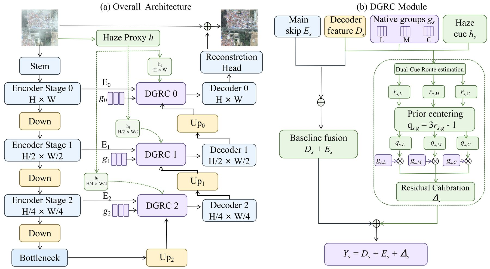

HazeGroupNet is available online in Expert Systems with Applications (Article 134438).
REMOTE SENSING · MULTIMODAL LEARNING · GEOSPATIAL AI
Xiangyu Jia 贾相宇
Ph.D. Student · Beijing Forestry University
I build efficient vision and multimodal systems for understanding high-resolution Earth observation data, with current work spanning change detection, image restoration, and scalable geospatial intelligence.

01Researcher in remote sensing and intelligent information systems
ABOUT ME
Research at the intersection of vision, language, and Earth observation.
I am a Ph.D. student at Beijing Forestry University. My research combines remote sensing interpretation with multimodal learning and efficient neural architectures, aiming to make geospatial AI more accurate, explainable, and practical at scale.
01
Language-guided change detection and instruction-conditioned segmentation.
02
Lightweight restoration and recognition for high-resolution remote sensing imagery.
03
Big data systems for forest ecological monitoring and geospatial analytics.
LATEST NEWS
What is new
Change-LISA is available early access in IEEE Transactions on Geoscience and Remote Sensing.
CSGANet is published in IEEE JSTARS as a lightweight architecture for remote sensing change detection.
SELECTED PUBLICATIONS
Selected work



森林生态站大数据快速存储与索引方法
A Hadoop- and HBase-based storage framework for heterogeneous forest ecological station data, with RowKey retrieval and secondary indexing through Elasticsearch.
BACKGROUND
Education & experience
Education
Ph.D. Student
Beijing Forestry University
M.S.
Beijing Forestry University
B.S.
Beijing Forestry University
Experience
Meituan
Applied AI and large-scale data systems
Ant Group
Data systems and intelligent applications
Meituan
Big data engineering and applied analytics
LET'S CONNECT
Working on a remote sensing problem?
I am open to research conversations, collaborations, and discussions around efficient geospatial AI.
Send an email ↗